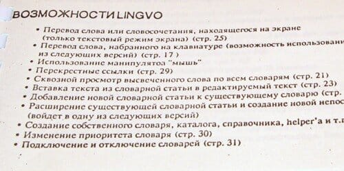
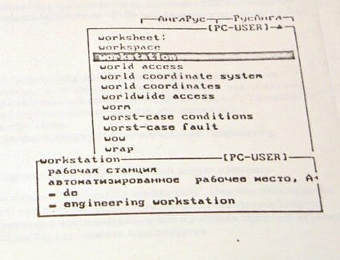

Lingvo 3.0
Хроника
Год выпуска: 1991.
Самая ранняя из сохранившихся версий Lingvo. Программа поставлялась на пятидюймовых дискетах, которые к моменту их обретения в 2010 году не удалось прочитать.

Внешний вид
Некоторое представление о внешнем виде и функциях можно получить из снимков страниц сохранившейся бумажной инструкции.





Источник: История Lingvo. Три-ноль — сообщение в блоге команды ABBYY Lingvo на LiveJournal.com (дата посещения: 12.07.2023).